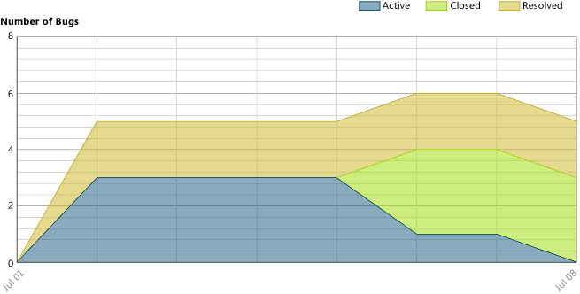
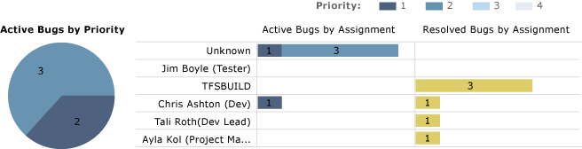
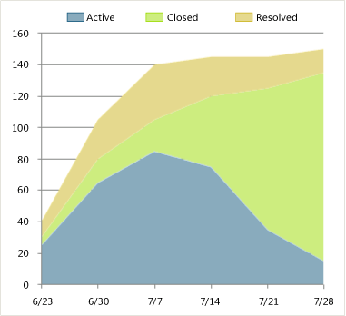
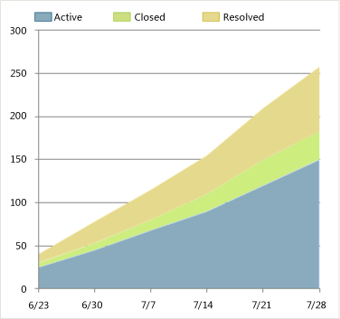
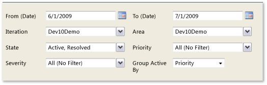

After the team has started to find and fix bugs, you can track the team's progress toward resolving and closing bugs by viewing the Bug Status report. This report shows the cumulative bug count based on the bug state, priority, and severity.
For information about how to access, refresh, or manage reports, see Reports (GovDev).
|
|
|---|
|
This report requires that the team project collection that contains your team project
was provisioned with SQL Server Reporting Services. This report is not available
if
|
|
In this topic |
You can use this report to answer the following questions :
|
Required Permissions
To view the report, you must be assigned or belong to a group that has been assigned the Browser role in Reporting Services. For more information, see Add Users to Team Projects or Managing Permissions.
 Data
in the Report
Data
in the Report
The data that appears in the Bug Status report is derived from the data warehouse. This report displays several sets of information as the following illustrations and table show and describe.
|
Information |
Description |
|---|---|
|
Number of Bugs |
A visual representation of the cumulative count of all bugs, grouped by their state. |
|
Active Bugs by Priority/Severity |
A pie chart that depicts the number of bugs that are still active, grouped by priority or severity. |
|
Active Bugs by Assignment |
A horizontal bar chart with the total count of bugs that each team member has assigned to them in the active state, grouped by priority or severity. |
|
Resolved Bugs by Assignment |
A horizontal bar chart with the total count of bugs that each team member has assigned to them in the resolved state, grouped by priority or severity. |
You can filter the Bug Status report in the following ways:
-
Change the start and end dates for the report.
-
Filter the bugs that are counted in the report by specifying iteration and area paths, bug state, priority, and severity.
For more information, see Filtering the Report and Changing the Displaylater in this topic.
Required Activities for Tracking Bugs
For the Bug Status report to be useful and accurate, the team must perform the following activities:
|
|
|---|
|
The team can use the Triage Workbook to review, rank, prioritize, and assign bugs. For more information, see Triage Workbook . |
-
Define bugs, and specify their Iteration and Area paths.
-
Specify the Priority and Severity of each bug.
 Note
Note
For information about how to define area and iteration paths, see Create and Modify Areas and Iterations.
-
Assign each bug to the team member who is working to resolve or close it.
-
Update the state of each bug as it is fixed, verified, and closed.
Setting
the Duration of the Iteration
To understand the progress that the team is making for your current iteration, the start and end dates for the report must match those of your current iteration cycle.
To change the duration of the iteration
-
Next to Iteration Start (Date) or Iteration End (Date), click the calendar icon, and then click a date.
-
Click View Report.
Interpreting
the Report
You should expect the Bug Status report to vary based on where you are in your product development cycle. Early iterations should exhibit a gradual increase in the number of active bugs. Iterations that are near the end of a development cycle should exhibit a wide band of resolved bugs.
Questions That the Report Answers
You can review the report to determine the progress within an iteration or over time. Specifically, you can find answers to the following questions:
-
How quickly is the team resolving and closing bugs?
-
Is the team fixing bugs quickly enough to finish on time?
-
Is the team fixing high priority bugs first?
-
What is the distribution of bugs by priority and severity?
-
How many bugs are assigned to each team member?
-
Does any team member need help to resolve or close bugs?
Healthy Version of Report
A healthy Bug Status report shows an increase in active bugs over time followed by a steady progression of resolving and closing bugs, as the following illustration shows. When the team fixes more bugs than it finds, the number of active bugs decreases.
Unhealthy Version of Report
The following illustration shows an unhealthy version of the Bug Status report.
An unhealthy Bug Status report shows one or more of the indicators that the following table describes:
|
Indicator |
Questions to ask |
|---|---|
|
The band for active bugs is becoming wider. If the width of the team's band for active bugs is increasing, the bug backlog is growing. The team is finding more bugs than it can resolve or close. A widening active bug band might indicate that a bottleneck is slowing the team's ability to resolve and close bugs. |
|
|
The number of active bugs is not changing. A flat trend in the number of active bugs indicates that the team is not finding bugs. |
|
|
The number of resolved or closed bugs is not changing. When the number of bugs that are being resolved or closed remains flat for long periods of time, team members might not able to resolve or close bugs. |
|
|
Bug assignments are not evenly distributed. The team might need to reassign work when a large number of bugs are assigned to one or two team members and only a few to other team members. |
|
|
The number of active higher priority bugs is larger than the number of active lower priority bugs. When the number of high priority bugs is much larger than the number of lower priority bugs, work might be progressing on lower priority items first. |
|
Filtering
the Report and Changing the Display
You can filter the Bug Status report or change its display in the following ways:
-
Change the start and end dates for the report.
-
Filter the set of bugs that are counted by changing the iteration paths, the area paths, the state, the severity, or the priority.
-
Change the grouping based on priority or severity.
The following illustration shows the available filters and display options:
To filter the set of bugs that are counted in the report
-
Perform one or both of the following actions:
-
In the Iteration and Area lists, select the check box of each iteration or product area to include.
-
In the State, Priority, and Severity lists, select the check box of each state, priority, and severity to include.
-
-
Click View Report.
To group bugs by priority or severity
-
In the Group Active By list, click Priority or Severity.
-
Click View Report.